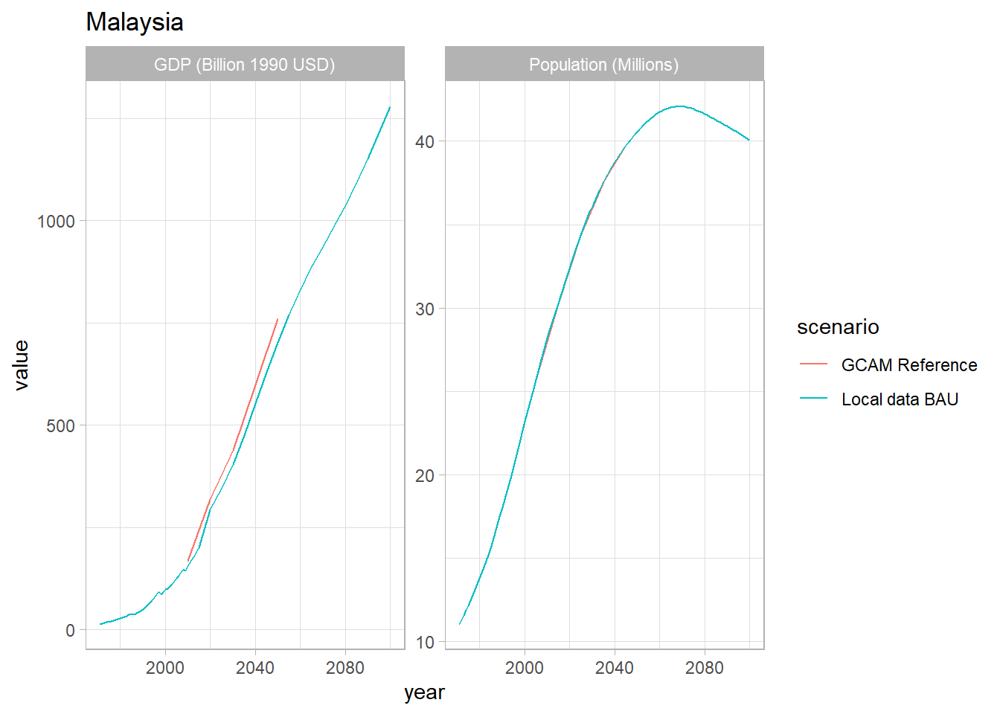
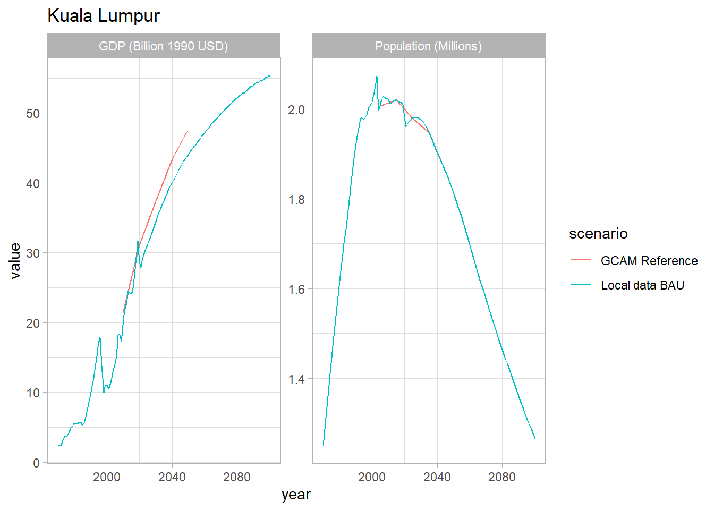
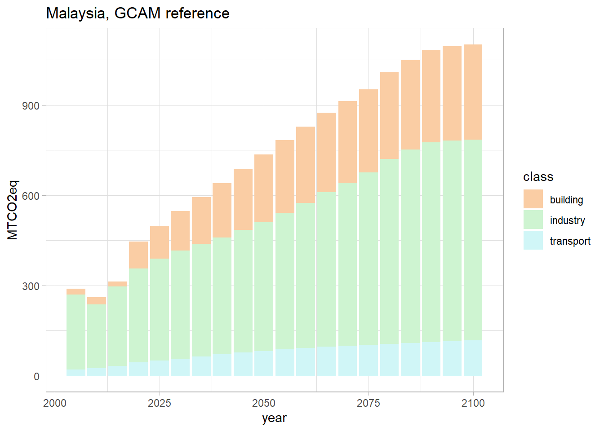
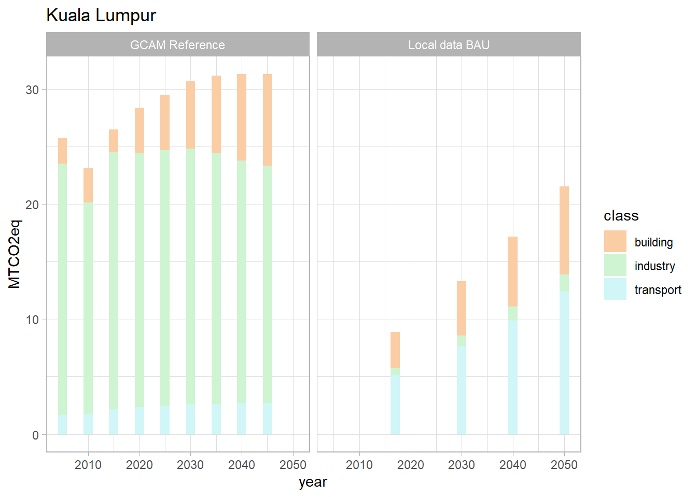

Socioeconomic assumptions
This section details the socioeconomic inputs used to define Malaysia
and its subregions, Kuala Lumpur and “Rest of Malaysia,” in GCAM. These
metrics include population, GDP, and GDP per capita. Historical and
projection data were used when available, otherwise data was calculated
using the assumptions described below.
|
Variable
|
Assumptions
|
Data Sources
|
|
Population
|
- Malaysia population used the medium variant projection and
historical data from the UN
- KL census data gives a
value for 2010. All other values were extrapolated and calculated using
the growth rates for Malaysia in total
- “Rest of
Malaysia” values found by subtracting KL numbers from
Malaysia
|
- Malaysia: United
Nations
- Kuala Lumpur 2010: United
Nations
|
|
GDP
|
- Malaysia annual growth rates are applied to KL’s 2020 GDP value
to extrapolate historical and future values
- “Rest of
Malaysia” values found by subtracting KL numbers from Malaysia
|
- Malaysia, historical: USDA
ERS
- Malaysia, future: SSP
database
- Kuala Lumpur 2020: Department
of Statistics Malaysia
|
Validation of GCAM
outputs
This section will compare local data in sources from Malaysia and
Kuala Lumpur to GCAM outputs.
Population and
GDP
local_pop <- read.csv("../data/malaysia/local_data_population.csv")
local_gdp <- read.csv("../data/malaysia/local_data_gdp.csv")
local_bau <- bind_rows(local_gdp, local_pop)
gcam_bau <- malaysia %>%
filter(param == c("pop", "gdp"),
region != "Rest of Malaysia",
scenario == REF_SCENARIO) %>%
mutate(param = units,
scenario = "GCAM Reference",
year = x)
bau <- bind_rows(local_bau, gcam_bau)
# Plot for Malaysia
bau %>%
filter(region == "Malaysia") %>%
ggplot(aes(x = year, y = value, color = scenario)) +
geom_line() +
facet_wrap(~param, scales = "free") +
ggtitle("Malaysia") +
theme_light()

# Plot for KL
bau %>%
filter(region == "KualaLumpur") %>%
ggplot(aes(x = year, y = value, color = scenario)) +
geom_line() +
facet_wrap(~param, scales = "free") +
ggtitle("Kuala Lumpur") +
theme_light()

CO2 emissions by
sector
malaysia_build_ind <- co2_my %>%
filter(scenario == REF_SCENARIO,
class %in% c("building", "industry")) %>%
mutate(param = units,
scenario = "GCAM Reference",
year = x)
malaysia_transport <- co2_my %>%
filter(scenario == REF_SCENARIO,
class %in% c("International Aviation", "International Shipping", "transport")) %>%
mutate(param = units,
scenario = "GCAM Reference",
year = x,
class = case_when(class %in% c("International Aviation", "International Shipping") ~ "transport",
T~class)) %>%
group_by(year) %>%
mutate(total = sum(value)) %>%
distinct(year, .keep_all = TRUE)
malaysia_co2 <- bind_rows(malaysia_build_ind, malaysia_transport)
malaysia_co2 %>%
ggplot(aes(x = year, y = value, fill = class)) +
geom_col() +
labs(title = "Malaysia, GCAM reference",
y = "MTCO2eq") +
scale_fill_manual(breaks = c("building", "industry", "transport"),
values = c("#facda4", "#cef4d1", "#d0f6f7")) +
theme_light()

local_co2 <- read.csv("../data/malaysia/local_data_emissions_by_sector.csv")
gcam_co2 <- co2_kl %>%
filter(scenario == REF_SCENARIO,
class %in% c("building", "industry")) %>%
mutate(param = units,
scenario = "GCAM Reference",
year = x)
# Aggregate GCAM classes into broad categories
gcam_transport <- co2_kl %>%
filter(scenario == REF_SCENARIO,
class %in% c("International Aviation", "International Shipping", "transport")) %>%
mutate(param = units,
scenario = "GCAM Reference",
year = x,
class = case_when(class %in% c("International Aviation", "International Shipping") ~ "transport",
T~class)) %>%
group_by(year) %>%
mutate(total = sum(value)) %>%
distinct(year, .keep_all = TRUE)
bau_co2 <- bind_rows(local_co2, gcam_co2, gcam_transport)
bau_co2 %>%
ggplot(aes(x = year, y = value, fill = class)) +
geom_col() +
facet_wrap(~scenario) +
labs(title = "Kuala Lumpur",
y = "MTCO2eq") +
scale_fill_manual(breaks = c("building", "industry", "transport"),
values = c("#facda4", "#cef4d1", "#d0f6f7")) +
theme_light()

Energy by fuel and
sector
final_energy_ref_my <- malaysia %>%
filter(param %in% energy_parameters,
region == "All of Malaysia",
scenario == REF_SCENARIO) %>%
mutate(param = units) %>%
rchart::chart(save = F,
show = F)
final_energy_ref_my$chart_class
final_energy_ref_kl <- malaysia %>%
filter(param %in% energy_parameters,
region == "KualaLumpur",
scenario == REF_SCENARIO) %>%
mutate(param = units) %>%
rchart::chart(save = F,
show = F)
final_energy_ref_kl$chart_class
Electricity by fuel
and sector
elec_ref_my <- malaysia %>%
filter(param %in% electricity_parameters,
region == "All of Malaysia",
scenario == REF_SCENARIO) %>%
mutate(param = units) %>%
rchart::chart(save = F,
show = F,
size_text = 10)
elec_ref_my$chart_class
elec_ref_kl <- malaysia %>%
filter(param %in% electricity_parameters,
region == "KualaLumpur",
scenario == REF_SCENARIO) %>%
mutate(param = units) %>%
rchart::chart(save = F,
show = F)
elec_ref_kl$chart_class